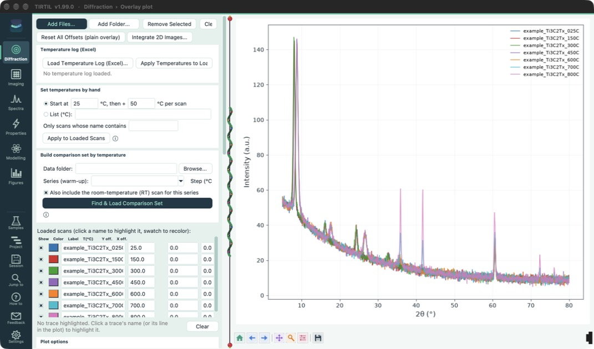
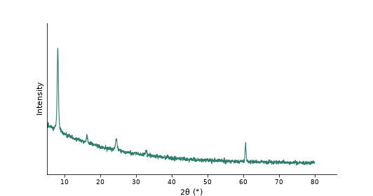

Diffraction
Overlay plot
Look at many scans together.

Steps
Add Files...loads .xy, .xye, .dat, .csv, HDF5 or Excel scans. Each one becomes a trace in the list.Load Temperature Log (Excel)...Temperatures come from the file header, a temperature log, or you type them into the list.- Stack the traces:
Suggest Steppicks an offset so they do not overlap. Add MarkerMark phase lines with markers or reference sticks. Drag the legend where you want it.Export Figure...Export the figure at a journal size (ACS, RSC, Nature, Elsevier, Wiley).
How it works

Worked example
Load the 7 scans of a heating run, give each its temperature, color by temperature, then mark the TiC lines: the TiC (200) peak at 2θ = 41.9° (Cu Kα) shows up only in the 700 and 800 °C scans.
In TIRTIL: How to (⌘/) › Try It With Example Data loads this example.